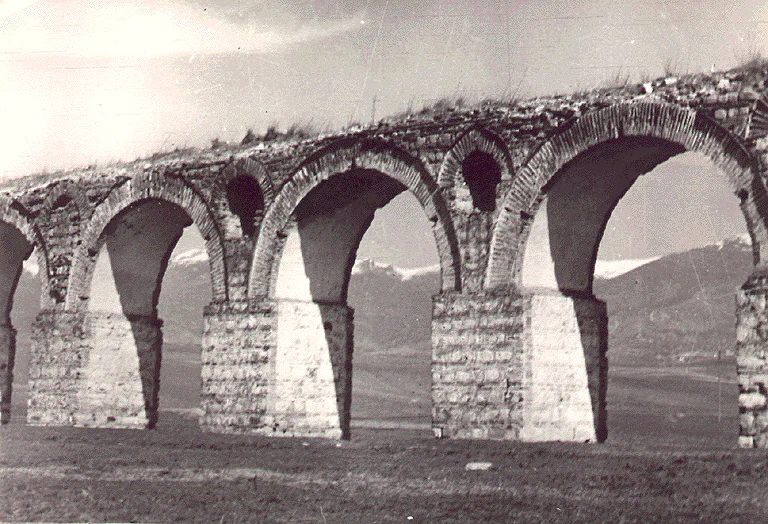
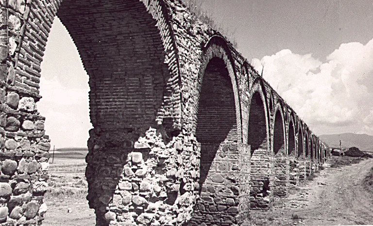
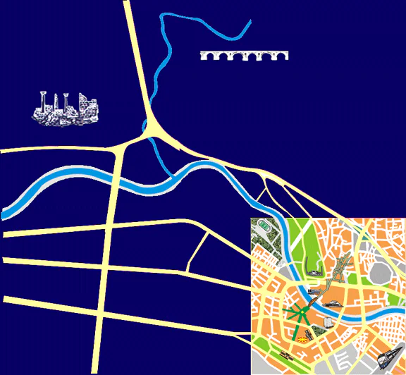

Ujësjellësi
- Prodhimi
- UFUŽ dhe Dokumentar Filmi Pragë
- Skenari dhe regjia
- Slavko Janevski dhe EMAN CANERA
- Viti
- 1959
- Kohëzgjatja
- 00:16

Në periferi të Shkupit, pranë rrugës Shkup - Kaçanik (në të djathtë), ndodhet ujësjellësi i vjetër, i ndërtuar me gur e tulla: monument madhështor i shekullit VI të e.s. Ai e furnizonte qytetin me ujë të pastër të pijshëm nga mali Karadak i Shkupit. Në perëndim të ujësjellësit, në grykëderdhjen e lumenjve Lepenec dhe Vardar, ndodhen vendgjetjet arkeologjike të qytetit Scupi. Në atë vend, para 15 shekujsh, ndodhej Shkupi, që atëherë quhej Scupi. Pas tërmetit katastrofik të vitit 518, qyteti u zhvendos në vendin e sotëm.


Pjesë e ujësjellësit. Një ushtar turk (asker) dhe dy civilë, njëri me veshje fshati e tjetri me veshje qyteti. Vitet 1920


 Ujësjellësi4 kartolina
Ujësjellësi4 kartolina Kalaja30 kartolina
Kalaja30 kartolina Urat60 kartolina
Urat60 kartolina Kej58 kartolina
Kej58 kartolina Sheshi46 kartolina
Sheshi46 kartolina Ndërtesat66 kartolina
Ndërtesat66 kartolina Kishat e krishtera19 kartolina
Kishat e krishtera19 kartolina Objektet myslimane33 kartolina
Objektet myslimane33 kartolina Shtëpia e Oficerëve29 kartolina
Shtëpia e Oficerëve29 kartolina Teatri28 kartolina
Teatri28 kartolina Stacioni hekurudhor13 kartolina
Stacioni hekurudhor13 kartolina Shkollat36 kartolina
Shkollat36 kartolina Parqet12 kartolina
Parqet12 kartolina Tregjet18 kartolina
Tregjet18 kartolina Rrugët38 kartolina
Rrugët38 kartolina Panorama I60 kartolina
Panorama I60 kartolina Panorama II30 kartolina
Panorama II30 kartolina Kolazhe55 kartolina
Kolazhe55 kartolina Përmbytjet9 kartolina
Përmbytjet9 kartolina Tërmeti27 kartolina
Tërmeti27 kartolina Shkupi 200026 kartolina
Shkupi 200026 kartolina